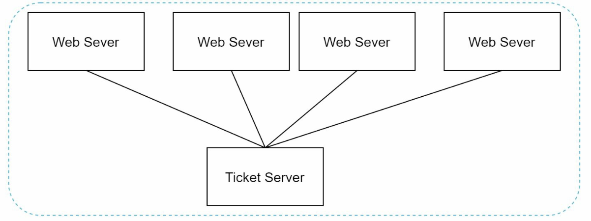
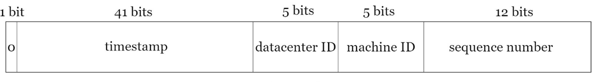
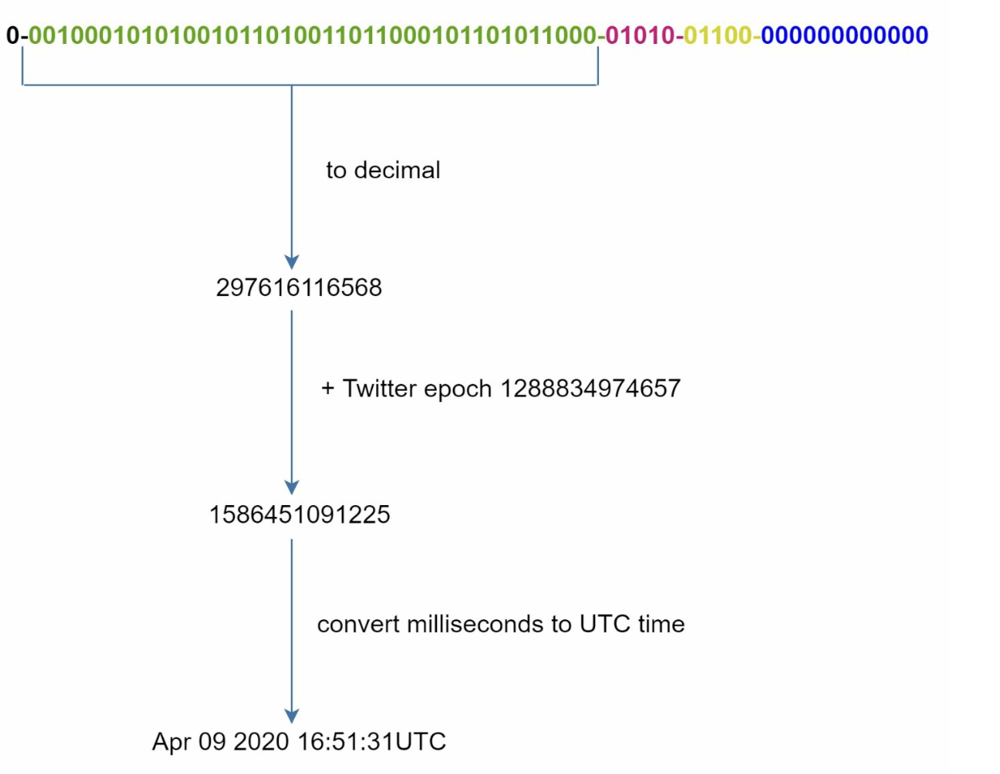

第 7 章：设计一个分布式唯一 ID 生成器
原章节：Design a Unique ID Generator in Distributed Systems · 原项目路径
07. Unique-Id Generator/
本章导读
AUTO_INCREMENT 是每个初学者最先学会的数据库技巧——插入一条记录，数据库自动给你一个递增的 ID。简单、好用、从不重复。
直到你把数据库拆成了两台。
现在两张表各自从 1 开始自增，用户 ID 撞车了；你想加一个 UNIQUE 约束，却发现冲突会随机出现；你想改成"一台专门发号"，结果那台机器挂了全站写不进去。
ID 生成听起来是系统设计里最简单的问题，实际上它藏着分布式系统最经典的几个坑：时钟不可信、单点故障、性能瓶颈、有序性。 学完这一章，你应该能回答：为什么 64 位这个数字如此重要？Twitter 的 Snowflake 凭什么一毫秒能生成 4096 个 ID？服务器时钟被 NTP 往回拨了 1 秒会发生什么？
你将学到
- 分布式环境下自增主键失效的根本原因
- 四种主流方案的完整对比：多主复制、UUID、票据服务器、Snowflake
- Snowflake 的 41 + 5 + 5 + 12 位分配，以及每一段的容量实际验算
- 时钟回拨（Clock Skew）的成因与四种真实处理方案
- NTP 为什么不能彻底解决问题
- 现代替代方案：ULID、美团 Leaf、百度 UidGenerator
- 为什么"ID 单调递增"对数据库索引性能如此重要
1. 问题背景：自增主键为什么不够用
单机数据库里，AUTO_INCREMENT 是最省心的主键方案：
- 绝对唯一：数据库保证不重复。
- 单调递增：新 ID 一定比旧 ID 大。
- 实现简单：一行 SQL 都不用写。
但在分布式环境里，这三个优点全部失效：
| 问题 | 说明 |
|---|---|
| 扩展性差 | 自增是单点串行操作。所有插入都要去同一台机器排队取号，这台机器就成了整个系统的吞吐量天花板 |
| 同步困难 | 如果你把数据库拆成分片，多个分片各自自增就会产生重复 ID；要让它们不重复，就得引入跨分片的协调，而协调本身就是分布式难题 |
| 跨机房不友好 | 跨数据中心的网络往返延迟是几十毫秒。如果每生成一个 ID 都要跨机房协调一次，吞吐量会被延迟直接掐死 |
这里的核心矛盾：唯一性需要协调，而协调需要时间。分布式 ID 生成器的全部设计技巧，本质上都是在回答同一个问题——能不能在不协调（或极少协调）的前提下，依然保证全局唯一？
答案是能，但需要一个聪明的办法：把"唯一性"的来源从"协调"换成"信息编码"。只要 ID 里包含的信息组合起来天然不重复，就不需要任何协调。这就是 Snowflake 的核心思路。
2. 第一步：明确需求
需求描述得越清楚，后面的方案选择就越容易。
功能需求
- ID 必须是唯一的、数值型的。
- ID 必须能放进 64 位（bit） 整数里。
- ID 按时间大致递增（注意：不要求严格 +1，只要求"后生成的比先生成的大"）。
- ID 必须能按时间排序。
非功能需求
- 系统每秒至少能生成 10,000 个 ID。
- 系统必须能水平扩展。
- ID 生成器是关键路径——它挂了，所有需要写数据的业务全部瘫痪。
两个必须理解的约束
① 为什么是 64 位？
64 位不是随便定的，它来自工程现实的约束：
- 数据库主键：MySQL 的
BIGINT是 64 位有符号整数，这是最常用的主键类型。 - 编程语言：Java 的
long、Go 的int64、C 的int64_t都是 64 位。 - JavaScript 的天花板：JS 的
Number是 IEEE 754 双精度浮点数，只能精确表示 2^53 - 1 以内的整数。超过这个值就会丢精度——这是为什么很多后端返回 64 位 ID 时要序列化成字符串（Twitter、微博的 API 都这么干）。
② 为什么"有序"这么重要？
因为数据库索引。这一点本章第 5.3 节会详细展开，但先记住结论：随机无序的 ID 会让 B+ 树的插入从"顺序追加"变成"随机插入"，引发频繁的页分裂，写入性能可能差几倍。
关于"每秒 10,000 个 ID"这个指标：这个数字来自原书，作为面试题的基准线。但要意识到它其实非常低——后面会算出来，Snowflake 单台机器每毫秒就能生成 4096 个 ID，也就是每秒 400 多万个。所以在这个需求下，真正的挑战从来不是"性能够不够"，而是"如何保证唯一"和"如何不出单点故障"。
3. 第二步：四种高层方案
3.1 多主复制：让每台机器按固定步长自增
「多主复制（Multi-Leader Replication）」 方案的思路是：不用一台机器发号，而是让 k 台数据库服务器各自自增，但步长都是 k，起始值错开。

例如 k = 2：
| 服务器 | 起始值 | 生成序列 |
|---|---|---|
| 服务器 1 | 1 | 1, 3, 5, 7, 9, ... |
| 服务器 2 | 2 | 2, 4, 6, 8, 10, ... |
这样两台服务器生成的 ID 天然不重复，而且每台机器只需要管理自己的自增序列，不需要任何跨机协调。
优点：实现简单，改动极小（只是把 AUTO_INCREMENT 的步长改一下），能立刻解决"多分片 ID 重复"的问题。
缺点：
- 跨数据中心很难扩展：跨机房的自增序列需要额外协调，一旦要加机房，步长和起始值都要重新规划。
- ID 不再按时间递增：服务器 1 生成 1、3、5，服务器 2 生成 2、4、6。如果服务器 2 比服务器 1 慢半拍，就会出现"ID 2 的创建时间晚于 ID 3"这种倒序。这直接违背了"按时间排序"的需求。
- 增删服务器极其痛苦：
k从 2 变成 3，所有服务器的步长和起始值都要重新调整，历史 ID 的分布规律也被打乱。
术语勘误：原笔记用的是 Multi-Master。和 Master-Slave 一样，业界正在把
Master换成Leader，所以标准叫法是 Multi-Leader Replication（多主复制）。详见文末【勘误与补充】。
3.2 UUID：让每台机器自己算
「UUID（Universally Unique Identifier，通用唯一识别码）」 是一个 128 位的标识符。它的设计目标是：不同机器、不同时间、独立生成，也不需要协调，就能保证（概率意义上的）全球唯一。

常见形式是 550e8400-e29b-41d4-a716-446655440000——32 个十六进制数字，分成 5 组。
优点：
- 完全不需要协调：每台服务器自己算自己的，没有任何中心节点。
- 极易水平扩展：加多少台 Web 服务器都不影响。
缺点：
- 超出 64 位要求：UUID 是 128 位，是要求的两倍。存储空间翻倍，索引体积翻倍。
- 无序：UUID v4 是纯随机数，完全没有时间信息，无法按时间排序。
- 可能不是数值型：UUID 通常以字符串形式存储和传输，字符串比较比整数比较慢得多。
- 索引性能灾难：随机分布的 UUID 作为数据库主键，会导致 B+ 树频繁页分裂。
补充：UUID 的版本差异很重要
说"UUID 无序"并不完全准确，要分版本看：
版本 生成方式 是否有序 v1 时间戳 + MAC 地址 近似有序，但暴露 MAC 地址（隐私问题） v4 纯随机 完全无序 v7 Unix 时间戳前缀 + 随机后缀 有序，是 2024 年发布的新标准（RFC 9562） UUID v7 是这几年最重要的变化。它把毫秒时间戳放在最前面，后面接随机位，既保留了"无需协调"的优点，又获得了时间有序性。如果你的项目正在选型，v7 是比 v4 好得多的选择——但它依然是 128 位，不满足本章 64 位的要求。
3.3 票据服务器：用一台机器专门发号
「票据服务器（Ticket Server）」 的思路很直白：既然多台机器自增会冲突，那就退回去用一台机器专门发号。

最常见的实现是：用一台 MySQL 实例，建一张只有一行的表，靠 REPLACE INTO ... LAST_INSERT_ID() 来取号。
优点：
- 实现极其简单，小规模系统用起来很舒服。
- 生成的是数值型 ID，满足要求。
- ID 单调递增（因为是单点串行发号），完美满足有序性。
缺点：
- 单点故障（SPOF）：这台机器挂了，所有依赖 ID 的业务全部停摆。
- 多服务器同步困难：如果你想部署多台票据服务器来消除单点，就要解决它们之间如何不重复发号的问题——又回到了原点。
工程上怎么补救？ 可以在客户端做号段缓存（Segment Allocation）：一次向票据服务器申请 1000 个号，缓存在本地慢慢用，用完再申请。这样既减少了网络往返，也让票据服务器短暂宕机时服务不中断（本地还有余量）。这正是美团 Leaf-segment 方案的雏形，见第 5.2 节。
3.4 Twitter Snowflake：把唯一性编码进 ID 本身
这是本章的主角。
Snowflake 的核心洞察是：唯一性不一定要靠协调获得，也可以靠"把足够多的区分信息拼进 ID 里"获得。


一个 64 位的 ID 被切成五段：
| 段 | 位数 | 作用 |
|---|---|---|
| 符号位（Sign Bit） | 1 位 | 恒为 0，保证 ID 是正数 |
| 时间戳（Timestamp） | 41 位 | 从自定义纪元起算的毫秒数，保证 ID 按时间有序 |
| 数据中心 ID（Datacenter ID） | 5 位 | 标识最多 2^5 = 32 个数据中心 |
| 机器 ID（Machine ID） | 5 位 | 标识每个数据中心内最多 2^5 = 32 台机器 |
| 序列号（Sequence Number） | 12 位 | 同一毫秒内的序号，支持 2^12 = 4096 个 ID，每毫秒重置为 0 |
为什么这样设计就能保证唯一？
因为"两台机器在同一毫秒生成同一个 ID"这个冲突，被 数据中心 ID + 机器 ID 这两段拆解了——不同的机器，这两段就不同，ID 天然不重复。而"同一台机器在同一毫秒生成多个 ID"这个冲突，被序列号拆解了。
优点：
- 可扩展：单机每秒能生成 400 多万个 ID，远超需求。
- 时间有序：ID 的高位是时间戳，所以按 ID 排序约等于按时间排序。
- 去中心化：没有任何中心节点，没有单点故障。
缺点（原笔记完全没提，但很关键）：
- 强依赖时钟：ID 的唯一性建立在"时间戳单调递增"这个假设上。如果时钟回拨，就可能生成重复 ID。这是 Snowflake 最著名的坑，见第 4.3 节。
- 需要管理机器 ID：
数据中心 ID + 机器 ID只有 10 位，最多 1024 台机器。而且每台机器的编号必须人工或自动分配且不重复——这本身又需要一点协调。
4. 第三步：深挖设计细节
原笔记在这里有一处结构性错误：它的步骤编号是
Step 1 → Step 2 → Step 4，缺少 Step 3。从内容上看，Step 2 里混杂了不少本该属于"设计细节"的内容（比如位分配的说明）。这里补上缺失的 Step 3，把 Snowflake 的细节讲透。详见文末【勘误与补充】。
4.1 Snowflake 的容量验算
原笔记给出了位分配，但没有算过容量。这个计算是理解 Snowflake 局限性的关键，我们逐段实际算一遍。
① 41 位时间戳能撑多少年？
- 41 位能表示的毫秒数：
2^41 = 2,199,023,255,552毫秒。 - 换算成秒：
2,199,023,255,552 ÷ 1000 = 2,199,023,255.552秒。 - 换算成天：
2,199,023,255.552 ÷ 86400 ≈ 25,451.66天。 - 换算成年：
25,451.66 ÷ 365.2425 ≈ **69.68 年**。
所以 41 位时间戳大约能撑 69.7 年。
Twitter 的自定义纪元是 1288834974657 毫秒，换算成 UTC 时间正好是 2010 年 11 月 4 日 01:42:54.657（这一步我实际验算过，原笔记的日期是对的）。
那么理论上的耗尽时间就是：2010-11-04 + 69.68 年 ≈ **2080 年 7 月**。
这是一个必须在设计阶段就想清楚的问题。 2080 年听起来很远，但你要考虑的是：
- 系统的生命周期可能长达 10~20 年，确实用不完；
- 但如果自定义纪元设错了（比如误用了 1970 年 Unix 纪元），那么
1970 + 69.7 = 2039 年就会耗尽——这是一个会被忽视的定时炸弹。- 另外，41 位时间戳溢出后会发生什么？ ID 会回绕到 0 附近，和 2010 年生成的 ID 直接冲突。所以必须在耗尽前完成迁移方案（比如切换到新的纪元并给 ID 加前缀区分）。
② 每毫秒每台机器能生成多少个 ID？
- 12 位序列号：
2^12 = **4096**个。 - 换算成每秒：
4096 × 1000 = **4,096,000**个/秒/机器。
单台机器每秒 409 万个 ID，是需求（10,000/秒）的 409 倍。
③ 总共能支持多少台机器？
- 数据中心：
2^5 = 32个。 - 每数据中心机器数：
2^5 = 32台。 - 总计：
32 × 32 = **1024**台。
④ 整个集群的理论总吞吐？
4,096,000 × 1024 = **4,194,304,000** 个/秒，约 41.9 亿/秒。
验算结论：原笔记给出的位数分配和各段容量（32 个数据中心、32 台机器、4096 个序列号）全部正确。原笔记没有给出年数换算，这里补上，结论是 69.7 年。
一个容易被忽视的细节：
2^41不是"能表示的最大年数"的通用公式，它依赖于时间单位。 Snowflake 用的是毫秒，所以只有 69.7 年。 百度 UidGenerator 改用秒做单位，同样位数能撑的时间就长了 1000 倍，但它把时间戳位数砍到了 28 位——28 位秒只有2^28 ÷ 86400 ÷ 365.2425 ≈ 8.5 年，反而更短。 记住这个权衡关系：时间戳位数 × 时间单位精度 = ID 的可用寿命。
4.2 序列号溢出怎么办？
12 位序列号只有 4096 个槽位。如果同一毫秒内某台机器要生成超过 4096 个 ID，序列号就溢出了。
标准处理方式是自旋等待（Spin Wait）：
if (sequence > 4095) {
// 序列号用完，等到下一毫秒
long nextMillis = currentTimeMillis();
while (nextMillis <= lastTimestamp) {
nextMillis = currentMillis(); // 忙等
}
lastTimestamp = nextMillis;
sequence = 0;
}
这是"把性能问题转换成延迟问题"的经典手法。 单机每秒 409 万个 ID 已经远超绝大多数业务需求，真的撞上溢出的概率极低；就算撞上，等待 1 毫秒的代价也完全可以接受。
什么时候会真的成为问题？ 高并发批量导入场景（比如一次导入 100 万条数据）。这时可以考虑：
- 加大序列号位数（代价是压缩时间戳或机器位）；
- 换用号段模式（一次向中心申请一批 ID，见第 5.2 节）；
- 单机部署多个生成器实例，用不同的机器 ID 分担。
4.3 时钟回拨：Snowflake 最致命的坑
这是本章最重要的内容，也是原笔记只用一句"NTP 可以减小漂移"就带过去的地方。
Snowflake 的算法里有一行关键的检查：
if (currentTimestamp < lastTimestamp) {
// 时间倒流了！
}
如果当前时间小于上一次生成 ID 的时间，说明时钟被往回拨了。此时继续生成 ID，就可能产出和之前完全相同的 ID——唯一性保证直接崩溃。
时钟为什么会回拨？
| 原因 | 说明 |
|---|---|
| NTP 校时 | NTP 发现本机时钟比标准时间快，会把时钟往回拨。如果 NTP 配置为 step 模式（直接跳变），可能一次回拨几百毫秒甚至几秒 |
| 闰秒（Leap Second） | 某些系统的闰秒处理会导致时钟回退 1 秒 |
| 虚拟机/容器迁移 | 虚拟机从一台物理机迁移到另一台，宿主时钟不同步时，客户机时钟可能跳变 |
| 手动改时间 | 运维误操作 |
| 硬件时钟漂移 | 晶体振荡器本身有误差，长期不校时会累积漂移 |
四种处理方案
方案一：等待（Wait）—— 最简单
发现时钟回拨了，就自旋等待，直到系统时间追上 lastTimestamp。
if (currentTimestamp < lastTimestamp) {
long offset = lastTimestamp - currentTimestamp;
if (offset <= MAX_BACKWARD_MS) { // 比如 5ms
Thread.sleep(offset + 1); // 等回来
currentTimestamp = currentMillis();
} else {
throw new ClockMovedBackwardsException(offset);
}
}
- 优点：实现简单，短时间回拨（几毫秒）完全无感。
- 缺点：回拨时间长（比如 1 秒）时会阻塞所有 ID 生成请求，直接影响业务。所以要设一个阈值，超过就抛异常。
方案二：抛异常，让上层重试 —— 最安全
直接把"时钟回拨"当成一种系统错误抛出去，让调用方决定怎么办（重试、降级、告警）。
- 优点：绝不会产生重复 ID，问题会被立刻暴露出来，不会静默出错。
- 缺点：业务要处理这个异常，且回拨期间服务不可用。
方案三：借用备用位（Borrow Bits）—— 最优雅
预留一部分位（比如从序列号里借 2 位）专门用来应对回拨：每回拨一次，就把"回拨计数"加 1，并把它写进 ID 的预留位里。这样即使时间戳和序列号都一样，回拨计数不同也能保证 ID 不同。
- 优点：不阻塞、不抛异常，服务完全连续。
- 缺点：牺牲了一部分序列号空间；回拨次数也有上限（2 位只能记录 4 次），回拨太频繁仍会耗尽。
方案四：使用上次的时间戳继续生成 —— 有风险，慎用
不更新时间戳，只在序列号上递增，直到时间自然追上。
- 优点：服务不中断。
- 缺点：序列号会更快耗尽，回拨时间长时同样会阻塞。而且如果机器重启，
lastTimestamp丢失，这个方案就失效了。
生产环境的常见组合：短回拨（< 5ms）用等待，长回拨用抛异常 + 告警 + 人工介入。美团 Leaf-snowflake 用的就是类似策略，并额外通过 ZooKeeper 记录上次的时间戳，避免机器重启后
lastTimestamp丢失导致误判。
4.4 NTP 的局限性
原笔记说"用 NTP 来减小漂移"。这话没错，但NTP 解决不了时钟回拨问题，它甚至可能是回拨的制造者。
| 局限 | 说明 |
|---|---|
| 只能减小漂移，不能消除 | NTP 的典型精度是：局域网内 1 毫秒以内，公网几毫秒到几十毫秒。它让时钟更准，但不保证单调递增 |
| step 模式会造成跳变 | ntpd 的默认行为在偏差较大时会直接跳变时钟（step）。要用 slew 模式（渐进调整，每秒微调几毫秒）才能避免回拨。chrony 在这方面默认更友好 |
| 网络抖动影响精度 | NTP 依赖网络往返时间估算，网络拥塞时精度会显著下降 |
| 虚拟机时钟不可控 | 在虚拟化环境中，客户机的时钟可能被宿主机干预，NTP 无法完全掌控 |
| 闰秒处理不统一 | 不同操作系统、不同 NTP 实现对闰秒的处理方式不同，可能产生 1 秒的跳变 |
正确的态度：NTP 是减小问题概率的手段，不是消除问题的方案。任何依赖时钟的系统都必须自己实现时钟回拨保护——把"时钟可能不准、可能倒退"当作基本假设，而不是异常情况。
5. 第四步：收尾——高可用与生产落地
5.1 高可用
ID 生成器位于关键路径上：它挂了，所有需要写数据的业务全部停摆。所以必须做冗余。
- 多实例部署：每台机器分配不同的
机器 ID，任何一台挂掉，其他机器继续服务。 - 无状态化：Snowflake 生成器本身是无状态的（除了
lastTimestamp和sequence两个内存变量），所以可以用负载均衡随意调度，加机器就能扩容。 - 机器 ID 的分配与回收：这是最容易被忽视的运维问题。机器下线后它的 ID 不能立刻复用（可能还有在途请求），需要有一套带 TTL 的租约机制。常见做法是用 ZooKeeper / etcd 的顺序节点来分配和续约。
为什么"机器 ID 回收"很危险？ 假设机器 A（ID = 7）下线，你立刻把 ID 7 分配给机器 B。如果 A 在关机前生成过
[ts=1000, dc=1, machine=7, seq=500]，而 B 在时钟同步后于ts=1000时刻又生成了同样的 ID，就产生了重复。所以回收 ID 必须等待一个大于最大时钟偏差的安全窗口。
5.2 现代替代方案
原笔记写于 Snowflake 论文流行的年代，没有覆盖这些年出现的成熟方案。
ULID（Universally Unique Lexicographically Sortable Identifier）
ULID 是一个 128 位的标识符，结构是 48 位毫秒时间戳 + 80 位随机数，用 Crockford Base32 编码后是 26 个字符。
| 特性 | ULID | UUID v4 | Snowflake |
|---|---|---|---|
| 位数 | 128 | 128 | 64 |
| 时间有序 | ✓ | ✗ | ✓ |
| 需要协调 | 不需要 | 不需要 | 需要分配机器 ID |
| 时钟回拨影响 | 几乎无影响（80 位随机数兜底） | 无影响 | 会产生重复 ID |
| 字符串长度 | 26 | 36 | — |
48 位毫秒时间戳能撑多久？ 2^48 ÷ 1000 ÷ 86400 ÷ 365.2425 ≈ **8,919 年**（从 Unix 纪元 1970 年起算）。这个长度实际上永远不会耗尽。
ULID 最大的优势是"时钟回拨不再是致命问题"。 因为同一毫秒内还有 80 位随机数（
2^80 ≈ 1.2 × 10^24种可能），即使时钟回拨导致时间戳重复，随机部分撞车的概率也低到可以忽略。代价是它不满足 64 位要求——如果你的主键是
BIGINT，ULID 就用不了。这时可以考虑 64 位版本的 ULID（如 ULID64 / KSUID 的变体），思路是压缩时间戳位数。
美团 Leaf
美团的 Leaf 提供了两种方案，正好覆盖了本章讲的两条技术路线：
- Leaf-segment（号段模式）：本质是"票据服务器 + 号段缓存"的工程化版本。服务从数据库一次申请一批 ID（比如 1000 个）缓存在内存里，用完再申请。
- 优点：ID 严格单调递增，不依赖时钟，完全不受时钟回拨影响。
- 缺点：依赖数据库，有额外的运维成本；ID 是连续的，可被推测业务量（安全问题）。
- 适用：对有序性要求高、并发量中等的场景（如订单号）。
- Leaf-snowflake：在 Snowflake 基础上，用 ZooKeeper 顺序节点自动分配机器 ID（解决了运维痛点），并实现了完整的时钟回拨保护（短回拨等待、长回拨抛异常 + 告警）。
百度 UidGenerator
UidGenerator 也是基于 Snowflake 改造，主要创新点有两个：
- 秒级时间戳：默认位分配为
1 位符号 + 28 位秒级时间戳 + 22 位机器 ID + 13 位序列号。用秒代替毫秒，把省下的位数分给了机器 ID（22 位 → 支持 400 万台机器）和序列号（13 位 → 每秒钟 8192 个）。- 代价：28 位秒只能撑
2^28 ÷ 86400 ÷ 365.2425 ≈ **8.5 年**（从它的自定义纪元 2016-05-20 起算），需要在耗尽前迁移。
- 代价：28 位秒只能撑
- RingBuffer 预生成：后台线程提前把 ID 生成好放进环形缓冲区，业务线程直接从缓冲区取，把 ID 生成的开销从关键路径上彻底移除。
选型建议（给初级开发者的实用结论）：
场景 推荐方案 业务能接受 128 位、要全局唯一且有序、不想运维 UUID v7 / ULID 主键必须是 64 位 BIGINT，有机器管理能力Snowflake（或 Leaf-snowflake） 要求 ID 严格连续递增（如订单号） Leaf-segment（号段模式） 单机吞吐要求极高、想省掉网络开销 UidGenerator（RingBuffer） 只是单机小项目 老老实实用 AUTO_INCREMENT，别过度设计
5.3 ID 有序性对数据库索引的影响
这一点原笔记完全没提，但它是"为什么不用 UUID 当主键"这个问题的真正答案。
InnoDB 的主键索引是「聚簇索引（Clustered Index）」——这不是一个比喻，而是物理事实：表的数据行本身就存储在主键的 B+ 树叶子节点上，数据按主键顺序物理排列。
用自增 / 有序 ID 做主键时：
- 新记录的主键总是比现有记录大，B+ 树总是往最右侧追加。
- 叶子节点顺序填充，写满就分裂出一个新的页。页分裂频率低，且每次分裂都是"尾部追加"。
- 页的填充率高（接近 100%），索引体积小，缓存命中率高。
- 结果：顺序写入，性能好。
用随机 UUID v4 做主键时：
- 新记录的主键随机分布在整个值域，可能落在 B+ 树的任何一个位置。
- 要往中间插入，如果目标页已经写满，就必须把页劈成两半，再把数据挪过去。
- 频繁的页分裂导致：页的填充率只有 50%~70%（大量空洞）、索引体积膨胀、磁盘随机 IO 增加、缓冲池（Buffer Pool）命中率下降。
- 结果：随机写入，性能可能差几倍，索引占用空间翻倍。
实践建议：
- 优先用有序的 64 位 ID 做主键（Snowflake、ULID、或数据库自增）。
- 如果业务上必须使用 UUID，不要把它当聚簇索引主键。更好的做法是：主键仍用自增
BIGINT，把 UUID 建成一个带唯一约束的二级索引。这样二级索引虽然也是随机插入，但不影响数据的物理排列。- 如果一定要用 UUID 做主键，用 UUID v7 或 ULID，把随机性降到最低。
顺带一提：为什么"有序"和"安全"经常冲突？ 严格递增的 ID 会泄露业务量——竞争对手注册两个账号，看 ID 差多少，就能估算出你一天的订单量。这叫信息泄露（Information Leakage）。如果业务敏感，可以用号段模式 + 号段内随机打散，或者直接用带随机位的 Snowflake 变体。
勘误与补充
本节逐条指出原笔记中不准确、过时或缺失的地方。
勘误 1：步骤编号从 Step 2 直接跳到 Step 4，缺少 Step 3
- 原文说法：原笔记的小节标题依次是
Step 1: Understanding the Problem、Step 2: High-Level Design Options、Step 4: Additional Considerations——没有 Step 3。 - 问题：这是明显的结构性错误，会让读者以为漏读了一节。从内容上看，Step 2 里混入了不少本该属于"深挖设计细节"的内容（例如时间戳纪元、序列号重置规则的说明）。
- 正确说法：补上 Step 3: Deep Dive into Design Details（深挖设计细节），内容涵盖 Snowflake 的位分配验算、序列号溢出处理、时钟回拨、位段调优。本章第 4 节即为补上的 Step 3，原 Step 4 相应调整为"收尾"。
- 延伸：这也是原书（Alex Xu）章节结构的标准范式——
明确需求 → 高层设计 → 深挖细节 → 收尾。第 8、9 章都严格遵循了这个四步结构，只有第 7 章漏了第三步。
勘误 2：Multi-Master 是正在被淘汰的术语
- 原文说法：原笔记使用 "Multi-Master Replication"。
- 问题：与
Master-Slave同理，Master一词在技术社区正被Leader取代。 - 正确说法：使用 Multi-Leader Replication（多主复制）。Kafka、Raft 等主流系统早已使用 Leader/Follower 术语。
- 延伸：面试中说 Multi-Leader 或 Active-Active（双活）都是现代说法。
勘误 3：NTP 被描述为解决时钟问题的方案，实际上它也可能是问题来源
- 原文说法：
Solution: Use Network Time Protocol (NTP) to minimize drift（解决方案：使用 NTP 来减小漂移）。 - 问题：这句话本身不算错，但它给读者一个危险的暗示——"用了 NTP 就没有时钟问题了"。实际上：NTP 的 step 模式本身就会造成时钟回拨，而这正是 Snowflake 唯一性被破坏的直接原因。
- 正确说法：NTP 只能减小漂移，不能保证时钟单调。必须配合
slew模式（渐进调整）并在生成器内部实现时钟回拨保护。详见第 4.3、4.4 节。 - 延伸：这是本章最有工程价值的一条。任何依赖时钟的系统（Snowflake、分布式锁、TTL 缓存、幂等去重窗口）都要把"时钟可能倒退"当作基本假设。
勘误 4：Snowflake 的容量数字全部正确（诚实说明）
- 原文说法：原笔记给出
2^5 = 32个数据中心、2^5 = 32台机器、2^12 = 4096个序列号，以及自定义纪元1288834974657对应 2010 年 11 月 4 日 01:42:54 UTC。 - 核验结果：以上数字全部正确。我实际验算过：
1288834974657毫秒换算成 UTC 确实是 2010-11-04 01:42:54.657。32 × 32 = 1024台机器。4096 个/毫秒 × 1000 = 4,096,000 个/秒/机器。
- 唯一的补充：原笔记没有给出 41 位时间戳能撑多久的换算。实际是
2^41毫秒≈ 69.68 年，从 2010 年起算约在 2080 年 7 月耗尽。这是原笔记的内容缺失，不是错误。
补充 1：时钟回拨的完整处理方案
原笔记只有一句"用 NTP 减小漂移"，完全没有覆盖这个 Snowflake 最致命的问题。详见第 4.3 节，包含等待、抛异常、借用备用位、复用时间戳四种方案及其取舍。
补充 2：现代替代方案（ULID、Leaf、UidGenerator）
原笔记只讲了 Snowflake，没有覆盖这些年出现的成熟工业方案。详见第 5.2 节。对于今天的项目，ULID 和 UUID v7 往往是比 Snowflake 更省心的选择。
补充 3：ID 有序性与数据库索引性能
原笔记没有解释"为什么 ID 要按时间有序"——只把它当成一条需求列出来。真正的答案在 InnoDB 聚簇索引的页分裂行为上。详见第 5.3 节。
补充 4：UUID 的版本差异
原笔记把 UUID 当成一个整体来评价，没有区分 v1 / v4 / v7。UUID v7（RFC 9562）是 2024 年发布的新标准，具有时间有序性，这是选型时的重要信息。详见第 3.2 节。
补充 5：机器 ID 的分配与回收
原笔记说 Snowflake"去中心化、无单点故障"，但没有提 机器 ID 只有 10 位（最多 1024 台机器），且分配和回收本身需要协调。如果 ID 回收太快，可能产生重复 ID。详见第 5.1 节。
常见误区
| 误区 | 为什么错 | 正确理解 |
|---|---|---|
| 用 UUID 就能解决问题 | UUID 是 128 位，超出 64 位要求；v4 完全无序，做主键会严重拖慢写入 | 要 64 位且有序，选 Snowflake / ULID；必须用 UUID 就选 v7 |
| 用了 NTP 就不会有时钟问题 | NTP 只能减小漂移，step 模式本身就会造成回拨 | 必须在生成器内部实现回拨保护，把时钟倒退当基本假设 |
| Snowflake 时钟回拨只会导致性能下降 | 回拨会直接导致生成重复 ID，破坏唯一性这个根本保证 | 回拨是正确性问题，不是性能问题，必须显式处理 |
| Snowflake 完全去中心化，没有任何协调 | 数据中心 ID + 机器 ID 只有 10 位，最多 1024 台，分配和回收需要协调 |
它是"无中心发号节点"，但机器编号管理仍需要协调 |
| ID 连续递增是好事 | 连续 ID 会泄露业务量（看 ID 差就能估算订单数） | 安全敏感场景要在号段内打散或加随机位 |
| 自增主键落后了，任何项目都该换成分布式 ID | 单机小项目用 AUTO_INCREMENT 完全够用，引入 Snowflake 反而增加运维负担 |
架构选型看规模，不看过不过时。别过度设计 |
| 41 位时间戳能撑 69 年，所以随便用 | 这 69 年是从自定义纪元起算的。如果误用 1970 年纪元，2039 年就耗尽 | 自定义纪元要显式配置并写进文档；预留迁移方案 |
| 序列号溢出会导致系统崩溃 | 标准实现是自旋等待到下一毫秒 | 溢出只会增加 1 毫秒延迟，不会出错。但批量导入场景要提前评估 |
| 分布式 ID 生成器的主要挑战是性能 | 单机 Snowflake 每秒 409 万，需求只要 1 万/秒 | 真正的挑战是唯一性（时钟回拨）和可用性（无单点） |
面试速记
-
一句话概括：本章设计一个能生成 64 位、全局唯一、按时间有序 ID 的分布式服务——核心方案是 Snowflake，用「时间戳 + 机器标识 + 序列号」的位编码替代中心化协调。
-
必答要点：
- 自增主键失效的根本原因是单点串行发号，成为吞吐量天花板且无法跨机房。
- 四种方案对比：多主复制（简单但无序）、UUID（无需协调但 128 位且无序）、票据服务器（简单但单点）、Snowflake（综合最优但有机器 ID 上限和时钟依赖）。
- Snowflake 位分配：1 位符号 + 41 位毫秒时间戳 + 5 位数据中心 + 5 位机器 + 12 位序列号。单机 4096 个/毫秒 = 409.6 万个/秒，共支持 1024 台机器。
- 时钟回拨是最大的风险：会导致生成重复 ID，必须显式处理（短回拨等待、长回拨抛异常 + 告警）。
- ID 有序性的价值在于数据库索引：InnoDB 聚簇索引下，有序 ID 是尾部追加，随机 ID 会导致频繁页分裂。
-
加分项：
- 主动算出 41 位时间戳 ≈ 69.7 年，并指出自定义纪元决定了耗尽时间。
- 主动提到 NTP 的 step 模式本身就是回拨来源，并提出用
slew模式 + 内部保护双保险。 - 主动介绍 ULID / UUID v7 作为现代替代方案，并说明它们"80 位随机数让时钟回拨不再是致命问题"。
- 主动区分 Leaf-segment（严格递增、不依赖时钟）和 Leaf-snowflake（高性能、依赖时钟） 的适用场景。
- 主动提到 JS 的
Number只能精确表示 2^53-1，所以 64 位 ID 传给前端要序列化成字符串。
-
高频追问：
- "如果服务器时钟被 NTP 往回拨了 1 秒，你的 Snowflake 会怎样？" → 会生成与 1 秒前相同的 ID（时间戳和序列号都相同），破坏唯一性。处理方式：短回拨（< 5ms）自旋等待；超过阈值抛异常并告警；更优雅的做法是预留位记录"回拨次数"。
- "Snowflake 最多支持多少台机器？不够用怎么办？" → 默认 10 位机器标识 → 1024 台。不够用可以：重新分配位段（牺牲序列号或时间戳位数）；或者改用号段模式（Leaf-segment），把 ID 生成从"每台机器独立算"变成"从中心批量领取"。
- "为什么不能用 UUID 做主键？"
→ 两个原因：① 128 位超出
BIGINT范围，存储和索引体积翻倍；② v4 随机无序，在 InnoDB 聚簇索引上会导致频繁页分裂，写入性能下降、索引碎片化。如果非要用，选 UUID v7 并考虑降级为二级索引。 - "ID 生成器挂了怎么办？"
→ 多实例部署，每个实例分配不同机器 ID，任何一台挂掉其他继续服务。生成器本身无状态（只有内存中的
lastTimestamp和sequence），可以水平扩展。机器 ID 的分配用 ZooKeeper/etcd 的顺序节点 + TTL 租约，回收要等待安全窗口。 - "你的 ID 会泄露业务量吗？" → 会。严格递增的 ID 让竞争对手能通过注册两个账号、比较 ID 差值来估算你的订单量。敏感场景要在号段内随机打散，或使用带随机位的方案。
延伸阅读
- ByteByteGo 系统设计面试课程 — 原笔记的来源
- Twitter Snowflake 原始公告 — Snowflake 的设计动机
- RFC 9562: UUID v7 — 时间有序 UUID 的新标准
- ULID 规范 — 128 位、字典序可排序的标识符
- 美团 Leaf — 号段模式与 Snowflake 双方案的开源实现，强烈建议读它的时钟回拨处理代码
- 百度 UidGenerator — RingBuffer 预生成的高吞吐实现
- chrony 官方文档 — 现代 NTP 实现，默认使用 slew 模式避免时钟跳变